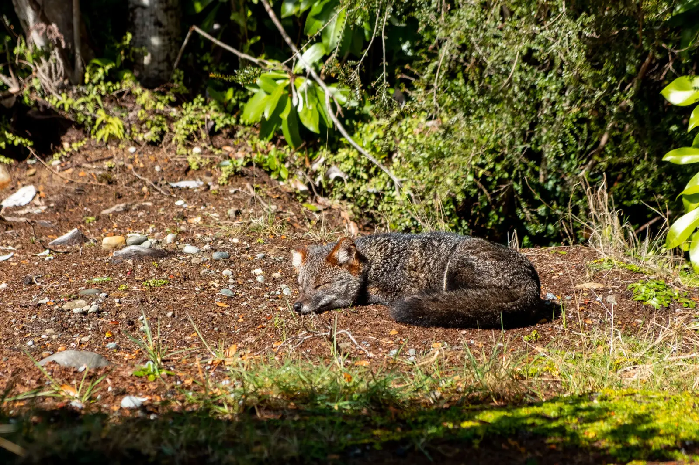
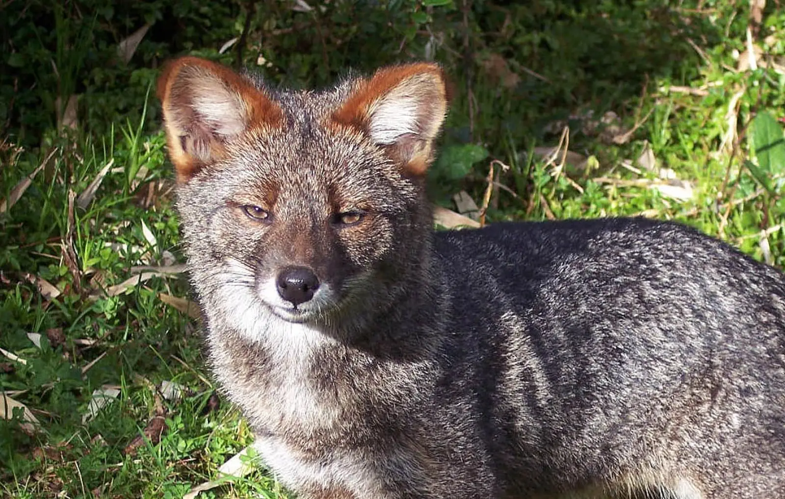

The Darwin's fox is one of the only fox species listed as endangered. On the red list, it is marked as critically endangered. It is found on only two islands in southern Chile, Chiloe Island and the Valdivian coastal range.
The Darwin's fox is listed as endangered due to habitat loss and diseases transmitted through free-roaming dogs. Some records count less than 1,000 remaining individuals.
The Darwin's fox eats small mammals, birds, amphibians, lizards, beetles, fruit, and berries.
This fox is named after Charles Darwin, who discovered the species by boat in 1834. They are diurnal, being active during the day, cursorial, meaning they are adapted to run, and altricial, meaning their young have almost no resemblance of their adult forms, often lacking hair, sight, and the ability to walk.


Photo by unknown from unknown
Photo by unknown from unknown